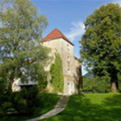

LA FONDATION SALOMON
Collectionneurs d'art contemporain, Claudine et Jean-Marc Salomon ont décidé
de s'engager pour la création d'aujourd'hui en ouvrant un espace dédié à sa diffusion.
La fondation, reconnue d'utilité publique par décret du 11 avril 2001, est située,
près d'Annecy, au château d'Arenthon à Alex en Haute-Savoie ; elle s'est donnée
comme mission d'être un lieu vivant et propice à la rencontre entre les créateurs,
les amateurs d'art contemporain et un public aussi large que possible.
La fondation a ouvert ses portes le 27 juin 2001 avec une quarantaine d'œuvres des
artistes anglais Gilbert & George. Ce choix audacieux dans un département où l'art
contemporain est peu représenté et la mise en valeur pertinente des œuvres ont très
rapidement donné à la fondation une audience nationale et internationale.
|

|